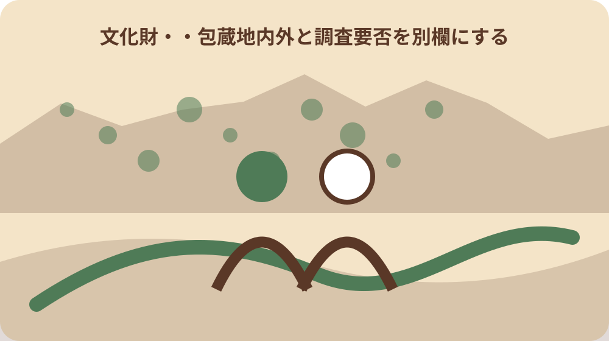
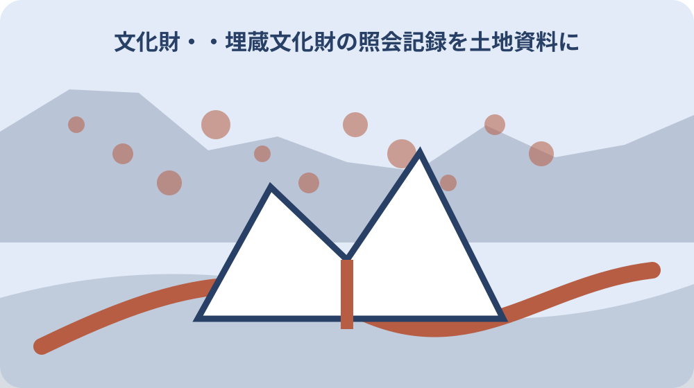

先に結論を確認する
この記事の答え：町は開発の大小にかかわらず、まず包蔵地の有無を確認するよう案内しています。
森町で最初に照合する条件：対象地番と掘削範囲を同じ地図上で示し、照会時に使った版を保存する。
照会記録を工事前の土地資料に置く理由
森町は、町内で消滅した遺跡を含めて270か所以上の遺跡を確認している。町内で開発を計画するときは工事規模の大小で省略せず、対象地が埋蔵文化財包蔵地に当たるかを最初に確認する案内である。住宅工事や配管なども名称だけで対象外と決めず、掘削範囲を示して照会する。確認前に残すのは対象地番、計画図、掘削部分、予定日の四点である。確認後は町回答、調査要否、届出要否を加える。この順序なら、県地図を見た段階、町が台帳照合した段階、個別手続が決まった段階を区別できる。270か所以上という町全体の情報から特定地が包蔵地だとは断定せず、個別地番の照会結果だけを土地資料の判定欄へ入れる。
照会結果は工事許可そのものではなく、対象地の取扱いを判断する入口となる資料である。土地資料には地番、照会日、回答部署、包蔵地内外、確認調査の要否を並べ、どの計画図で照会したかまで結び付ける。回答欄には町が示した文言を残し、施工者側の判断や工期都合による決定は別欄にする。
土地の状態によって必要な対応が変わる場合があるため、森町は早めの相談を案内している。着工直前の確認ではなく、掘削位置を決めた段階で照会し、回答後の試掘や届出に使える時間を残す。相談日は設計案の版と一緒に記録し、後日の変更案と混同しない。
最初の照会票には、計画する工事の名称、着工予定日、掘削の有無、照会に使った地図の作成日を記す。町の回答がどの時点の工事案に対応するかを特定できれば、設計変更後に古い回答だけが独り歩きすることを避けられる。照会前には地番確認、掘削線の作図、着工日の仮置きの順で準備し、町回答後に調査要否と届出期限を工程へ加える。
対象地番と掘削範囲を一枚で示す
窓口照会では、対象地の地番が分かる資料と、対象範囲を囲んだ住宅地図等を持参する。地番だけ、住所だけ、工事名だけでは対象範囲が再現できないため、地番と掘削予定線を同じ図面に置く。
照会に使った図面には作成日と版を付ける。建物配置、配管、擁壁などの掘削範囲が後で変わった場合、旧図面への回答を新しい範囲へそのまま適用したと誤認しないためである。
土地資料には、照会図面、地番資料、工事図面を同じ照会番号で束ねる。町から範囲の確認を求められた場合も、どの線を包蔵地照合の対象にしたかを一枚で示せる。
複数筆にまたがる計画では、各地番と掘削部分の対応を図面上で分ける。一部だけを照会したのに敷地全体が確認済みと受け取られないよう、対象外部分も輪郭を示し、今回照会しない範囲であることを注記する。住宅地図、位置図、工事平面図の順に縮尺と方位を確かめ、同じ境界と掘削線が三枚で追えるかを提出前に照合する。
窓口・ファクス・メールの証跡を分ける
森町が示す照会方法は、窓口、ファクス、メールの三つである。窓口は森町役場北館1階の社会教育課文化振興係で、持参した地図の控えに訪問日と担当部署を記す。
ファクスとメールでは、照会者氏名、連絡先、対象地番、対象範囲を示す地図が必要である。送信票や送信済みメールだけでなく、添付した地図の版も保存し、再送時の取り違えを防ぐ。
回答を受けたら受信方法と受信日を加える。電話で補足を聞いた場合は、相手部署、聞いた事項、元の書面回答を分け、口頭補足だけを包蔵地内外の確定資料にしない。
メールの件名やファクス送信票には対象地番を入れ、別案件との混同を防ぐ。個人の受信箱だけに回答を置かず、添付図と回答を一組で土地資料へ保存し、窓口照会の控えとは取得経路を分けて表示する。送信日時、到達確認、回答日時を分ければ、照会した事実と町が受け付けた事実、回答を受領した事実を混同せずに追跡できる。

町の台帳照合結果を受け取る
町への照会は、対象地を町が保有する遺跡情報と照合してもらう手続の記録である。県の地理情報だけを見て終えず、地番と範囲を町へ示した日、町から回答を受けた日を残す。
静岡県は埋蔵文化財情報の確認先として県統合基盤地理情報システムを案内している一方、文化財地図が修正中で正確に表示されていない旨も明記している。画面表示だけで対象外と確定しない。地図の閲覧日は控えても、それは森町へ地番と範囲を示す前段であり、個別計画に対する町回答とは分ける。
土地資料には県地図の閲覧日と、森町への照会結果を別々に置く。地図は事前確認、町回答は対象計画についての照会証跡として役割を分けると、後継者が判断経路を追える。二つを同じ回答欄へ統合しない。
町回答を転記するときは「地図で見つからなかった」などの自己判断へ置き換えず、町が示した区分と次の手続を記す。県地図の修正状況が変わっても、当時の閲覧画面と町回答のどちらを根拠にしたかが判別できる。確認順は県システムで概況を見る、森町へ図面付きで照会する、町回答の条件を工事案へ反映する、の三段階に分ける。
包蔵地内外と調査要否を別欄にする
所在の可能性がある場所、または所在が不明な場所では、町の判断により確認調査が必要になる場合がある。包蔵地かどうかと、確認調査が必要かどうかは同じ欄で処理しない。町回答が「不明」であれば、対象外へ丸を移さず、確認調査の要否が決まるまで判断待ちとして残す。
記録欄は少なくとも「包蔵地内・外・不明」と「確認調査が必要・不要・町判断待ち」に分ける。包蔵地内という回答から直ちに本発掘と決め付けず、町が示した次の手続を転記する。
回答に条件が付いたときは、対象となる掘削深さや範囲を図面番号とともに残す。計画変更後は以前の調査不要という回答が同じ条件で使えるか、社会教育課文化振興係へ再確認する。
確認調査が不要という結果も、照会した工事案の範囲と日付を伴う。土地そのものに将来一切の手続が不要という意味へ広げず、次の掘削計画では範囲、深さ、用途を示して町へ再確認する余地を残す。内外判定、調査要否、届出要否を三列に分ければ、一つの回答から別の手続まで済んだと誤読する危険を減らせる。
所在調査と試掘調査を混同しない
森町の流れでは、職員が現地へ立ち入る所在調査と、現地を掘削する試掘調査が示されている。立入り確認を受けただけなのか、掘削による確認まで行ったのかを記録名で区別する。
試掘確認調査の依頼には、教育委員会宛て依頼書、縮尺2500分の1相当の位置図、土地所有者の承諾書を用いる。提出物一覧に各書類の日付と版を付ける。
調査後は実施日、対象範囲、町から示された結果を図面と結ぶ。所在調査のメモを試掘結果として扱わず、どの方法で何を確認した記録かを表題で明示する。
現地立入りの日程を記しただけでは調査結果にならない。所在調査なら立入り範囲と町の確認内容、試掘なら掘削位置と結果文書を対応させ、未実施、実施済み、結果待ちの状態を案件表で分ける。試掘依頼前には依頼書、2500分の1相当位置図、所有者承諾書を順に確認し、実施後は町の結果文書を同じ案件へ追加する。
土地所有者承諾書を工事書類と結ぶ
試掘で現地を掘削する場合に使う土地所有者承諾書は、単なる連絡先メモではない。依頼書と同じ対象地番、同じ位置図、同じ試掘範囲に対応する書類として束ねる。共有土地や所有者変更が関係するときは、承諾者を自己判断せず登記情報と町への確認を経て必要な承諾をそろえる。
工事発注者と土地所有者が異なるときは、承諾者、承諾日、対象範囲を確認する。所有権移転や共有者の変更があった場合、以前の承諾書を新しい計画へ流用せず町へ扱いを尋ねる。
土地資料には原本の保管先と町へ提出した写しの有無を記す。依頼書、位置図、承諾書の三点が同じ試掘確認調査を指すことを、共通の管理番号で追える形にする。
縮尺2500分の1相当の位置図は、承諾対象の場所を確認できる版を使う。図面を差し替えた場合は承諾書が旧版と新版本のどちらに対応するかを記し、承諾のない追加範囲を試掘対象へ含めない。所有者名、対象地番、図面版、承諾日を一行で照合し、いずれかが変わったときは町へ承諾書の再作成要否を確認する。
第93条届出の60日前を逆算する
包蔵地内で工事に伴う掘削をする場合、文化財保護法第93条第1項の届出を工事着手60日前までに提出する。60日は工事契約日ではなく、掘削を伴う着手予定日から逆算する。基礎、造成、配管で着手日が異なるなら、最初に地面へ手を入れる予定を施工担当へ確認する。
工程表には着手予定日、60日前の日、町へ提出する予定日を並べる。書類確認や町から県への経由に要する時間を見込み、期限当日を町窓口への初回相談日にしない。
配置や掘削深さが変わった場合は、届出済み図面との相違を明示する。変更後も同じ届出で足りるかを自己判断せず、森町教育委員会へ確認した日と回答を残す。
60日前の日付はカレンダーで一度算出して終わりにせず、着工予定日の変更時に更新する。施工会社の工程表と届出管理表で着工日の表記をそろえ、町提出前に対象地番と最新図面の版を再確認する。逆算表では町への初回相談日、届出書案の確認日、町提出日、工事着手日を別行にし、60日前の提出期限と準備期限を混ぜない。
町経由で県へ出した日を残す
第93条の届出は森町教育委員会を経由して静岡県へ提出する流れである。施工者が県へ直接送った日ではなく、町窓口が受け付けた日を控え、提出先の経路を記録する。提出控えに受付表示がなければ、町へ受理確認の方法を尋ね、送付しただけの日付を受付日として確定しない。
控えには届出書、添付図面、提出日、受付を確認した部署をそろえる。県からの通知が届いた場合は、町への提出控えと同じ案件番号で結び、条件の読み落としを防ぐ。
町提出日と県側の文書日を一つの日付にまとめない。期限遵守の確認には町提出日、その後の工事条件の確認には県側文書と受領日を使い分ける。
県側文書に条件がある場合は、施工担当へ渡した日と説明した内容も記す。届出を出した事実だけで管理を終えず、通知された条件が最新の工事図面と工程へ反映されたかを着工前に照合する。町受付控え、県側文書、施工用図面の順に確認し、文書の対象地番と図面番号が同じ案件を指すことを着工判定欄へ記す。

工事計画変更と本発掘の分岐を記録する
確認調査の後に示された取扱いは、当初の工事範囲と対応している。掘削位置を避ける計画変更、工法変更、追加調査など、町から示された分岐を日付順に残す。設計者が選んだ案と町が示した条件を同じ文章へ混ぜず、町回答、施主決定、施工図更新の三段階に分ける。
本発掘の要否や費用負担は、ここに挙げた一般情報だけでは個別に確定しない。対象地の状態と工事内容を町へ示し、受け取った回答文書の範囲だけを土地資料へ記載する。
計画変更を選んだ場合は、変更前後の図面を重ねて掘削範囲の差を示す。確認済み範囲から外れる追加工事が生じたら、新たな照会が必要かを町へ確認する。
分岐表には町の回答日、選んだ対応、選ばなかった対応、決定後の図面番号を置く。本発掘が必要かどうかは個別回答に従い、一般案内だけから工程や負担を先に確定しない。変更案を町へ再提示した場合は、旧案への回答と新案への回答を別行にし、最終採用図面を一つだけ着工資料へ指定する。
包蔵地外で発見した遺物の連絡記録
包蔵地外との回答で工事着手へ進んでも、工事中に遺構や遺物を発見した場合は町へ速やかに連絡する案内である。対象外回答を、発見後も作業を続けてよい根拠にはしない。着工前に社会教育課文化振興係の連絡先、発見時刻と場所を記す担当、町の指示を受ける担当を共有する。
発見時は日時、場所、工事のどの工程だったかを記録し、社会教育課文化振興係へ連絡する。町から指示を受ける前に物を移動したり、発見状況を崩したりしないよう現場内で共有する。
連絡記録には連絡先、連絡時刻、町から受けた指示、作業再開の確認を分けて残す。当初の包蔵地外回答と発見後の対応記録を同じ土地資料で追えるようにする。
現場写真を撮るか、どこまで作業を止めるかは発見状況と町の指示に従う。連絡前に独自の名称や年代を付けず、発見位置、深さ、形状など現場で確認した事項と町からの説明を分けて記す。施工担当は発見時刻、機械の位置、連絡時刻を記録し、町の指示を受けた担当者名と作業再開確認時刻を追加する。
大石の視点：売買・相続後へ照会範囲を渡す
公的資料で確認できるのは、開発規模にかかわらない照会、対象地番と範囲図、調査や届出の流れである。売買・相続時に一式を次の所有者へ渡すことは町の記載ではなく、大石が勧める実務上の引継ぎ方法である。
以前の回答は以前の工事計画に対する記録である。新しい所有者が別の位置や深さを掘削する場合は、過去の回答を示したうえで森町へ再照会の要否を確認する。
引継ぎ一覧には、第93条届出、試掘依頼書、土地所有者承諾書、県側文書、工事中の発見連絡を案件ごとに記す。資料がない項目は未実施か紛失かを区別する。
大石の私見では、引継ぎの中心は「包蔵地だった」という一語ではなく、どの地番のどの範囲をいつ照会したかである。公的事実である町の手続要件と、この引継ぎ方法の提案を分けて記載する。引継ぎ時は地番資料、照会範囲図、町回答、調査結果、届出控えの順に並べ、未確認範囲を次の所有者へ明示する。